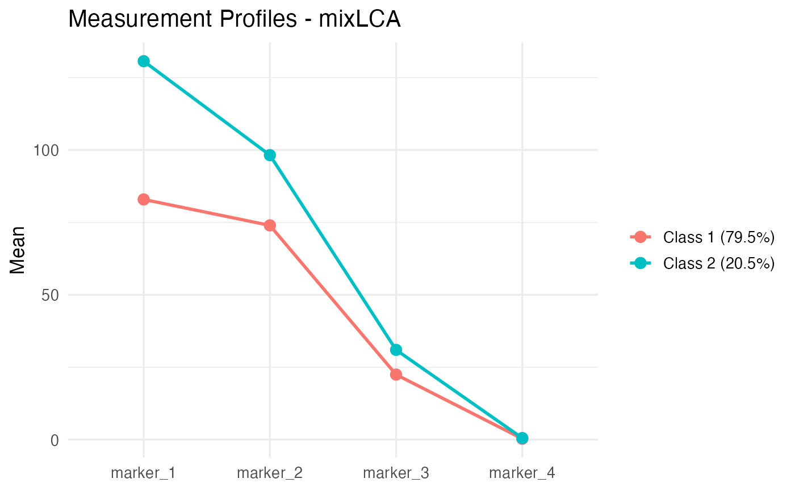

Concomitant Predictors and Distal Outcomes
Ali Sanaei
2026-05-28
Source:vignettes/distal-covariates.Rmd
distal-covariates.RmdThe partitioned architecture
mixLCA enforces a temporal separation between three
blocks of variables:
- Antecedent concomitant predictors: variables that come before class formation and shift the probability of belonging to each latent class (e.g., demographics).
- Contemporaneous manifest indicators: variables that define the classes (the measurement model).
- Subsequent distal outcomes: variables that are consequences of class membership and should not contaminate it.
Mixing these blocks naively produces double-counted information.
Letting a distal outcome help define classes mechanically inflates its
predictive power; letting a concomitant predictor enter the measurement
model leaks its variance into class meaning. mixLCA keeps
the three blocks separate: concomitants enter through a multinomial
logistic regression on class membership, and distals are estimated
after the measurement model has converged, under
Bollen-Curran-Heckman (BCH) inverse-classification-error weighting.
This vignette walks through both pieces on the embedded
health_screening dataset: a synthetic 800-subject screening
study with four continuous biomarkers, an age covariate, and a binary
outcome.
Setup
data(health_screening)
hs_vars <- c("marker_1", "marker_2", "marker_3", "marker_4")
dim(health_screening)
head(health_screening)The dataset has no missing values, so listwise deletion is not needed.
1. A naive measurement model (no covariates, no distal)
hs_naive <- lapply(2:3, function(K) {
fit_lca(health_screening, continuous = hs_vars, n_classes = K,
control = lca_control(n_starts = 10, seed = 110),
verbose = FALSE)
})
names(hs_naive) <- paste0("K", 2:3)
compare_models(hs_naive)
#> K LL n_params AIC BIC aBIC entropy ICL
#> K2 2 -9951.459 29 19960.92 20096.77 20004.68 0.7791383 20341.72
#> K3 3 -9892.962 44 19873.92 20080.05 19940.32 0.6250361 20739.15The K=2 model has the lowest BIC and a clean interpretation (low-marker vs. high-marker classes). We work with it below.
plot(hs_naive$K2, type = "profiles")
Class-mean profiles, naive K=2.
2. Adding a concomitant predictor
Age is plausibly antecedent to the marker-class status. We let class membership depend on age via multinomial logistic regression.
Character-vector form
The simplest specification passes a character vector of variable names:
hs_concom_chr <- fit_lca(
health_screening, continuous = hs_vars, concomitant = "age",
n_classes = 2,
control = lca_control(n_starts = 10, seed = 110),
verbose = FALSE)
hs_concom_chr$concomitant_coefs
#> [,1]
#> (Intercept) 3.49083450
#> age -0.04707317Each column gives the log-odds (relative to class 1) for the corresponding non-reference class. The sign and magnitude depend on the EM’s class-label permutation; pair the coefficient with the class profiles to interpret it.
For inference, pair the coefficients with their standard errors:
se <- concomitant_se(hs_concom_chr, health_screening)
data.frame(
Estimate = round(hs_concom_chr$concomitant_coefs[, 1], 4),
SE = round(se[, 1], 4)
)
#> Estimate SE
#> (Intercept) 3.4908 0.4555
#> age -0.0471 0.0093Formula form
If you want interactions, polynomials, transformations, or factor
dummy-coding, supply a one-sided formula instead. fit_lca
constructs the design matrix via stats::model.matrix, so
anything that works in lm() works here:
hs_concom_fm <- fit_lca(
health_screening, continuous = hs_vars,
concomitant = ~ age + I(age^2),
n_classes = 2,
control = lca_control(n_starts = 10, seed = 110),
verbose = FALSE)
hs_concom_fm$concomitant_coefs
#> [,1]
#> (Intercept) 3.524419e+00
#> age -4.861637e-02
#> I(age^2) 1.659219e-05The quadratic term lets you test whether the age effect saturates. For these data the quadratic coefficient is effectively zero, which is consistent with the linear-in-age generative model.
Other useful forms:
NAs in concomitant predictors
fit_lca() will refuse to run if any concomitant value is
NA. This is by design: silently dropping rows would desynchronise
model$posteriors from your input data and would invalidate
any downstream distal model that expects per-row alignment. Impute or
filter before calling:
hs_na <- health_screening
hs_na$age[1:3] <- NA
fit_lca(hs_na, continuous = hs_vars, concomitant = "age",
n_classes = 2)
#> Error: Missing values detected in concomitant predictors.
#> Impute or filter these rows before calling fit_lca() ...3. Out-of-sample prediction
predict() returns class posteriors for new data using
the fitted parameters. Three output types:
new_rows <- health_screening[1:5, ]
prob <- predict(hs_concom_chr, newdata = new_rows) # default: matrix
cls <- predict(hs_concom_chr, newdata = new_rows, type = "class")
all <- predict(hs_concom_chr, newdata = new_rows, type = "all")
list(prob = prob, cls = cls, all = all)
#> $prob
#> P_class_1 P_class_2
#> [1,] 0.008169249 9.918308e-01
#> [2,] 0.017173642 9.828264e-01
#> [3,] 0.008739025 9.912610e-01
#> [4,] 0.999926641 7.335861e-05
#> [5,] 0.006814684 9.931853e-01
#>
#> $cls
#> [1] 2 2 2 1 2
#>
#> $all
#> P_class_1 P_class_2 modal_class max_posterior log_lik
#> 1 0.008169249 9.918308e-01 2 0.9918308 -10.31443
#> 2 0.017173642 9.828264e-01 2 0.9828264 -12.19763
#> 3 0.008739025 9.912610e-01 2 0.9912610 -10.62779
#> 4 0.999926641 7.335861e-05 1 0.9999266 -13.80519
#> 5 0.006814684 9.931853e-01 2 0.9931853 -11.86996If newdata has NAs in concomitant columns, the
corresponding output rows are padded with NA so the output length always
equals nrow(newdata):
new_with_na <- health_screening[1:5, ]
new_with_na$age[c(2, 4)] <- NA
predict(hs_concom_chr, newdata = new_with_na)
#> P_class_1 P_class_2
#> [1,] 0.008169249 0.9918308
#> [2,] NA NA
#> [3,] 0.008739025 0.9912610
#> [4,] NA NA
#> [5,] 0.006814684 0.9931853Rows 2 and 4 are NA, which makes
cbind(new_with_na, predict(...)) unambiguous.
4. Distal outcome estimation
The screening outcome is a consequence of marker class. We do not put it in the measurement model; we estimate it separately under BCH weighting.
The BCH method (Bolck, Croon, Hagenaars 2004; refined by Vermunt 2010) constructs class-specific inverse-classification-error weights from the fitted posteriors, then fits a class-specific regression on the distal outcome using those weights. Because the measurement model is frozen before the distal step, no gradient from the distal outcome can contaminate class meaning.
hs_distal <- distal(hs_concom_chr, health_screening,
formula = outcome ~ age,
family = "binomial")
print(hs_distal)
#>
#> Distal Outcome Estimation (BCH Method) - mixLCA
#> ================================================
#> Formula: outcome ~ age
#> Family : binomial
#> Classes: 2
#>
#> --- Class 1 ---
#> Estimate SE z p
#> (Intercept) -1.67727 0.90877 -1.846 0.0649 .
#> age 0.02628 0.01766 1.488 0.1367
#> ---
#> Signif. codes: 0 '***' 0.001 '**' 0.01 '*' 0.05 '.' 0.1 ' ' 1
#> Effective N: 167.3
#>
#> --- Class 2 ---
#> Estimate SE z p
#> (Intercept) -3.9106 0.7234 -5.406 6.44e-08 ***
#> age 0.0373 0.0154 2.422 0.0154 *
#> ---
#> Signif. codes: 0 '***' 0.001 '**' 0.01 '*' 0.05 '.' 0.1 ' ' 1
#> Effective N: 632.7
#>
#> Classification Error Matrix:
#> [,1] [,2]
#> [1,] 0.8134 0.022
#> [2,] 0.1866 0.978Reading the output: one class has a negative intercept (low baseline
P(outcome = “yes”)), the other a less-negative or positive intercept
(higher baseline risk). The age slope within each class is
small and positive: class membership absorbs most of the age signal,
with a modest within-class residual age effect.
The classification error matrix at the bottom tells you how confident the modal assignment is. Diagonal dominance close to 1 means the BCH adjustment is mild; values closer to 0.5 mean classification is uncertain and the BCH weights are pulling more strongly.
Other families
distal() supports gaussian, binomial, and poisson
responses through the family argument:
# Continuous distal outcome:
distal(hs_concom_chr, my_data, my_continuous_outcome ~ age,
family = "gaussian")
# Count distal outcome:
distal(hs_concom_chr, my_data, n_events ~ age, family = "poisson")The IRLS solver inside distal() handles negative BCH
weights via eigen-projection plus step-halving (a real divergence risk
in earlier versions) and reports NA standard errors when
the sandwich estimator goes negative (rather than the misleading
you get from forcing the variance to zero).
5. Penalized covariance (when local dependence is continuous)
For continuous indicators with local dependence, switching from
"full" to "penalized" covariance with
glassoFast produces exact sparsity in the inverse
covariance matrix.
hs_pen <- fit_lca(
health_screening, continuous = hs_vars, concomitant = "age",
n_classes = 2, dependence = "penalized",
control = lca_control(n_starts = 10, seed = 110),
verbose = FALSE)The default penalty = "auto" selects a heuristic value
from data scale. To request exactly no shrinkage, set
penalty = 0 explicitly.
round(hs_pen$continuous_params$covariances[[1]], 2)
#> [,1] [,2] [,3] [,4]
#> [1,] 763.68 0.00 0.00 0.00
#> [2,] 0.00 549.92 0.00 0.00
#> [3,] 0.00 0.00 54.19 0.00
#> [4,] 0.00 0.00 0.00 16.92On this dataset the auto-selected penalty is large enough that every off-diagonal element is shrunk to exactly zero, leaving a diagonal covariance. This is the right answer: the markers are conditionally independent within class by construction, so any nonzero off-diagonal would be over-fitting.
6. Putting it together
A typical analysis arc:
# 1. Decide K with a naive fit
fits <- lapply(2:5, function(K)
fit_lca(health_screening, continuous = hs_vars, n_classes = K,
control = lca_control(n_starts = 10, seed = 110)))
compare_models(fits)
# 2. Add concomitants
fit <- fit_lca(health_screening, continuous = hs_vars,
concomitant = ~ age,
n_classes = 2,
control = lca_control(n_starts = 10, seed = 110))
# 3. Diagnose local dependence
bvr_tests(fit, health_screening)
# 4. Estimate distal under BCH
distal(fit, health_screening, outcome ~ age, family = "binomial")See vignette("workflow") for the categorical
local-dependence side of the picture (BVR direct effects and SLD), and
vignette("sld-theory") for the math.
Session info
sessionInfo()
#> R version 4.4.3 (2025-02-28)
#> Platform: aarch64-apple-darwin20
#> Running under: macOS Sequoia 15.7.4
#>
#> Matrix products: default
#> BLAS: /Library/Frameworks/R.framework/Versions/4.4-arm64/Resources/lib/libRblas.0.dylib
#> LAPACK: /Library/Frameworks/R.framework/Versions/4.4-arm64/Resources/lib/libRlapack.dylib; LAPACK version 3.12.0
#>
#> locale:
#> [1] C
#>
#> time zone: America/Chicago
#> tzcode source: internal
#>
#> attached base packages:
#> [1] stats graphics grDevices utils datasets methods base
#>
#> other attached packages:
#> [1] mixLCA_1.0.1
#>
#> loaded via a namespace (and not attached):
#> [1] gtable_0.3.6 jsonlite_2.0.0 dplyr_1.2.0 compiler_4.4.3
#> [5] tidyselect_1.2.1 Rcpp_1.1.0 jquerylib_0.1.4 systemfonts_1.2.3
#> [9] scales_1.4.0 textshaping_1.0.1 yaml_2.3.10 fastmap_1.2.0
#> [13] ggplot2_4.0.2 R6_2.6.1 labeling_0.4.3 generics_0.1.4
#> [17] knitr_1.51 htmlwidgets_1.6.4 tibble_3.3.0 desc_1.4.3
#> [21] bslib_0.9.0 pillar_1.11.0 RColorBrewer_1.1-3 rlang_1.1.7
#> [25] cachem_1.1.0 xfun_0.52 fs_1.6.7 sass_0.4.10
#> [29] S7_0.2.1 cli_3.6.5 pkgdown_2.2.0 withr_3.0.2
#> [33] magrittr_2.0.3 digest_0.6.37 grid_4.4.3 lifecycle_1.0.5
#> [37] vctrs_0.7.1 evaluate_1.0.4 glue_1.8.0 farver_2.1.2
#> [41] ragg_1.4.0 rmarkdown_2.30 tools_4.4.3 pkgconfig_2.0.3
#> [45] htmltools_0.5.8.1